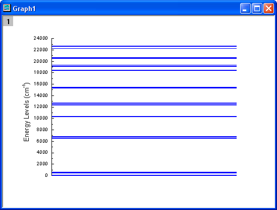

YAG結晶のクリスタルのEr3+イオンのエネルギーレベル構造
MultiPanel-EnergyLevel
概要
このチュートリアルでは、YAG結晶のクリスタルのEr3+イオンのエネルギーレベル構造を表すグラフを作成します。
必要なOriginのバージョン: Origin 2015 SR0以降
学習する項目
このチュートリアルでは、以下の項目について説明します。
- 列からデータの一部を選択してグラフを作成
- シンボルのプロパティを設定
- グラフを統合する
- レイヤのサイズと位置を変更
ステップ
- 新しいワークブックを用意します。ヘルプ: フォルダを開く: サンプルフォルダを選択して、サンプルフォルダを開きます。このフォルダ内のGraphingサブフォルダにあるVan_Rudd_Er_Energy_Levels.ｔｘｔ ファイルを探します。空のワークシートにファイルをドラッグアンドドロップしてインポートします。
- 列Bを選択し、作図：基本の2Dグラフ：散布図メニューを選択して、シンボルプロットを作成します。
- 散布図をダブルクリックして、作図の詳細ダイアログを開きます。右側のパネルのシンボルタブで、シンボルを変更し、シンボルの色を下図のようにします。
- ドロップラインタブで、水平にチェックを付け、太さを1にセットします。OK をクリックして、変更を適用します。
- X軸をダブルクリックして、軸ダイアログボックスを開きます。スケールタブで水平を選択し、X 軸のスケールを開始＝0、終了＝1に設定します。
- 軸と軸目盛タブ、目盛ラベル、タイトルタブを開いてから下アイコンが選択してあること確認して軸と目盛を表示するのチェックを外します。(表示という項目の場合もあります)。
- スケール タブにある垂直 アイコンで、次のようにY軸のスケールを設定します：開始: 0、終了: 24000、値( 主目盛 グループ): 2000
- タイトルタブで左アイコンを開き、Y軸タイトルのテキストをEnergy Levels (cm\+(-1)) にします。
- 軸と軸目盛タブで左アイコンをクリックし、主目盛と副目盛のスタイルを内側に設定します。
- OKをクリックして軸の設定を保存します。グラフ凡例を選択し、右クリックして開くドロップダウンリストから削除を選択してこれを削除します。下図のようなグラフになります。
- 
- セル1-8, 9-15, 16-21, 22-26, 27-31, 32-43, 44-48をそれぞれ選択して、作図：基本の2Dグラフ：散布図と操作し、散布図を作図します。さらにステップ3からステップ11までを繰り返して7つのグラフを新たに作成します。Y軸の増分(ステップ7)は、すべて100にセットし、開始 および 終了はそれぞれ0から600、6500から6900、10200から10500、12300から12800、15200から15600、18300から20800、22200から22700にセットします。また、Y軸のタイトル(ステップ9)は、それぞれ異なり、それぞれ \+(4)I\-(15/2), \+(4)I\-(13/2), \+(4)I\-(11/2), \+(4)I\-(9/2), \+(4)F\-(9/2), \+(4)F\-(7/2) \+(2)H2\-(11/2) \+(4)S\-(3/2), +(4)F\-(3/2) \+(4)F\-(5/2)のようにします。Y 軸の主目盛と副目盛は、なしにセットします。
- Y軸タイトルの回転角度の変更を行います。Yタイトルを選択し、右クリックメニューからオブジェクトの表示属性を選択し、オブジェクトプロパティダイアログで、回転(度)を0にセットします。
- グラフの1つをアクティブにし、グラフ操作：グラフウィンドウの統合を選択します。設定を以下のように変更し、OKボタンをクリックして、作成した8個のグラフを統合します。
- 統合したグラフをダブルクリックして、作図の詳細ダイアログを開きます。Layer1のレイヤの大きさ・描画スピードタブで、レイヤ領域を以下のように変更します。
- レイヤの大きさを15×15(ステップ15での幅と高さ)に変更し、適切な位置に移動します。Y軸ラベルのサイズを調整して、対応する矢印と円を追加します。下図のようなグラフになります。